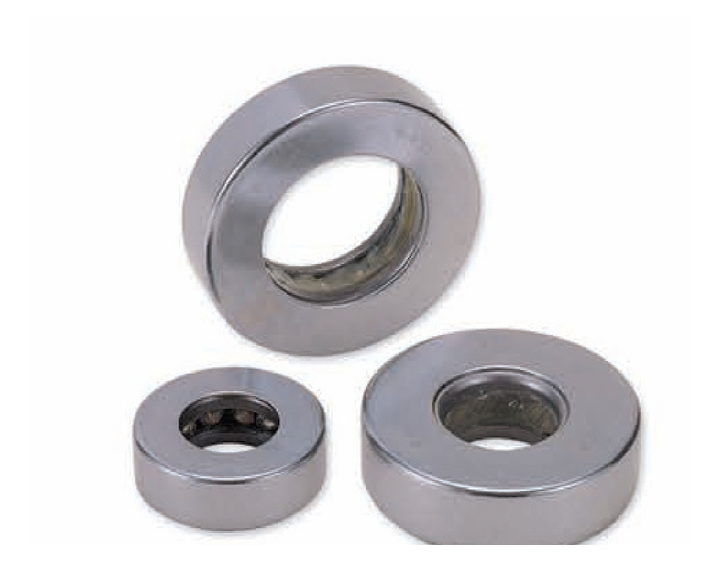

Kingpin Thrust Bearings
분리형 스러스트 베어링의 단점을 보완한 조립형(일체형) 스러스트 베어링입니다.
차량, 중장비 등 킹핀(조향축) 부위를 비롯한 다양한 용도에 사용됩니다.
형번을 입력하면 검색됩니다. 치수가 "문의"로 표시된 형번은 출처가 불충분해 정확한 치수를 싣지 못했으니 견적 문의 바랍니다.
구조 단면도 (개념도)
↑ 상하 레이스(와셔) + 롤러(니들) 케이지 조립 구조 · d(내경)·D(외경)·B(전체 높이)
실제 형번별 비례와는 다를 수 있는 구조 개념도이며, 치수값은 아래 표를 따릅니다.
원일베어링(WBC) 카탈로그 제품 사진

분리형 스러스트 베어링을 조립형(일체형) 구조로 개선한 제품입니다.
| 형번 | d(내경) | D(외경) | B(폭) |
|---|---|---|---|
| 20TAG12 | 문의 | 문의 | 문의 |
| 25TAG11 | 25 | 43.5 | 12 |
| 25TAG12 | 25.3 | 48.6 | 15.8 |
| 28TAG12 | 28.3 | 51.8 | 15.8 |
| 30TAG12 | 문의 | 문의 | 문의 |
| 32TAG12 | 32 | 56.8 | 17 |
| 35TAG12 | 35 | 64 | 19 |
| 40TAG12 | 40.2 | 70.5 | 20.2 |
| 51104-1 | 20 | 35 | 10 |
| 51106-1 | 30 | 47 | 11 |
| 51108-1 | 40 | 60 | 13 |
| T-19 | 문의 | 문의 | 문의 |
| T-22 | 문의 | 문의 | 문의 |
| T-28 | 문의 | 문의 | 문의 |
| T-50 | 문의 | 문의 | 문의 |
| T-60 | 문의 | 문의 | 문의 |
| 25.4KP | 문의 | 문의 | 문의 |
| F-35A | 35 | 65 | 18.3 |
단위: mm
※ 형번 목록은 원일베어링공업(주)(WBC, www.wbc-bearing.co.kr) 회사소개 자료 기준이며, 이 자료에는 치수표가 없어 2곳 이상의 독립된 베어링 판매처·제조사 자료가 일치하는 10개 형번(25TAG11·25TAG12·28TAG12·32TAG12·35TAG12·40TAG12·51104-1·51106-1·51108-1·F-35A)만 인터넷 교차 확인 치수를 실었습니다. 나머지 8개(20TAG12·30TAG12·T-19·T-22·T-28·T-50·T-60·25.4KP)는 출처가 1곳뿐이거나 값이 서로 엇갈려 "문의"로 남겼습니다. SWS 자체 카탈로그 수치가 아닌 외부 교차 확인 값이므로 발주 전 재확인 바랍니다.